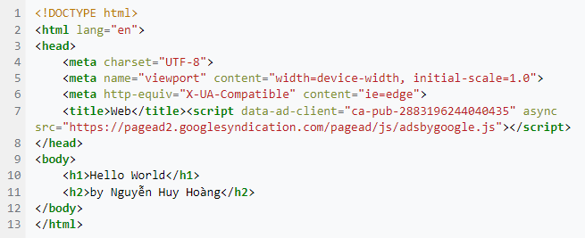

Tóm tắt sơ lược về Webside
Website, còn gọi là trang web hoặc trang mạng, và nội dung liên quan được xác định bằng một tên miền chung và được xuất bản trên ít nhất một máy chủ web. Các ví dụ đáng chú ý là các website wikipedia.org, google.com và amazon.com. Tất cả các trang web có thể truy cập công khai đều tạo thành World Wide Web. Cũng có những trang web riêng tư chỉ có thể được truy cập trên mạng riêng, chẳng hạn như trang web nội bộ của công ty dành cho nhân viên của công ty. Các trang web thường dành riêng cho một chủ đề hoặc mục đích cụ thể, chẳng hạn như tin tức, giáo dục, thương mại, giải trí hoặc mạng xã hội. Siêu liên kết giữa các trang web hướng dẫn điều hướng của trang web, thường bắt đầu với trang chủ. Người dùng có thể truy cập các trang web trên nhiều loại thiết bị, bao gồm máy tính để bàn, máy tính xách tay, máy tính bảng và điện thoại thông minh \. Ứng dụng được sử dụng trên các thiết bị này được gọi là trình duyệt web.
Khái niệm cơ bản về Web
Có hai phần cơ bản trong 1 Webside là : Front end và Back end.
- Phần front-end của một trang web là phần tương tác với người dùng. Tất cả mọi thứ bạn nhìn thấy khi điều hướng trên Internet, từ các font chữ, màu sắc cho tới các menu xổ xuống và các thanh trượt, là một sự kết hợp của HTML, CSS, và JavaScript được điều khiển bởi trình duyệt máy tính của bạn.Những ngôn ngữ hay dùng cho phần này có thể VD: HTML,CSS,Js,…
- Backend là gì? Thế nhưng điều gì giúp phần front-end của một trang web có thể hoạt động được? Tất cả dữ liệu sẽ được lưu trữ ở đâu? Đó là phần việc của back end. Phần back end của một trang web bao gồm một máy chủ, một ứng dụng, và một cơ sở dữ liệu. Một lập trình viên back-end xây dựng và duy trì công nghệ mà sức mạnh của những thành phần đó, cho phép phần giao diện người dùng của trang web có thể tồn tại được.Những ngôn ngữ hay dùng cho phần này VD:PHP,MySQL,…
Lộ trình học của tôi
- Thời gian để tôi hoàn thành 1 khóa về web cb là khoảng 1 tháng , mỗi ngày từ 3-4h có hôm đến 8h/ngày
- Khóa học mà tôi học về web cb là: Lớp học lập trình Web cơ bản – Dũng Lại Lập Trình link khóa học
HTML
HTML (viết tắt của từ HyperText Markup Language, hay là "Ngôn ngữ Đánh dấu Siêu văn bản") là một ngôn ngữ đánh dấu được thiết kế ra để tạo nên các trang web trên World Wide Web. Nó có thể được trợ giúp bởi các công nghệ như CSS và các ngôn ngữ kịch bản giống như JavaScript. Các trình duyệt web nhận tài liệu HTML từ một web server hoặc một kho lưu trữ cục bộ và render tài liệu đó thành các trang web đa phương tiện. HTML mô tả cấu trúc của một trang web về mặt ngữ nghĩa và các dấu hiệu ban đầu được bao gồm cho sự xuất hiện của tài liệu.(nguồn:Wikipedia)
Cấu trúc cơ bản của 1 trang HTML
CSS
Cascading Style Sheets (CSS) là ngôn ngữ bảng định kiểu được sử dụng để mô tả bản trình bày của tài liệu được viết bằng ngôn ngữ đánh dấu như HTML.CSS là công nghệ nền tảng của World Wide Web, cùng với HTML và JavaScript. CSS được thiết kế để cho phép tách biệt giữa trình bày và nội dung, bao gồm bố cục, màu sắc và phông chữ.Sự tách biệt này có thể cải thiện khả năng tiếp cận nội dung; cung cấp tính linh hoạt và kiểm soát nhiều hơn trong việc xác định các đặc điểm trình bày; cho phép nhiều trang web chia sẻ định dạng bằng cách chỉ định CSS có liên quan trong một tệp .css riêng biệt, giúp giảm độ phức tạp và lặp lại trong nội dung cấu trúc; và cho phép tệp .css được lưu vào bộ nhớ đệm để cải thiện tốc độ tải trang giữa các trang chia sẻ tệp và định dạng của tệp.(nguồn:Wikipedia)
Cấu trúc code CSS
JavaScript
JavaScript, theo phiên bản hiện hành, là một ngôn ngữ lập trình thông dịch được phát triển từ các ý niệm nguyên mẫu. Ngôn ngữ này được dùng rộng rãi cho các trang web (phía người dùng) cũng như phía máy chủ (với Nodejs). Nó vốn được phát triển bởi Brendan Eich tại Hãng truyền thông Netscape với cái tên đầu tiên Mocha, rồi sau đó đổi tên thành LiveScript, và cuối cùng thành JavaScript. Giống Java, JavaScript có cú pháp tương tự C, nhưng nó gần với Self hơn Java. .js là phần mở rộng thường được dùng cho tập tin mã nguồn JavaScript.
Các tính năng và code cơ bản của JavaScript cũng tương tự python và có 1 số khác biệt về cách gọi tên biến,cách chuyển data , ...(nguồn:Wikipedia)
Code JavaScript căn bản
PHP
PHP: Hypertext Preprocessor, thường được viết tắt thành PHP là một ngôn ngữ lập trình kịch bản hay một loại mã lệnh chủ yếu được dùng để phát triển các ứng dụng viết cho máy chủ, mã nguồn mở, dùng cho mục đích tổng quát. Nó rất thích hợp với web và có thể dễ dàng nhúng vào trang HTML. Do được tối ưu hóa cho các ứng dụng web, tốc độ nhanh, nhỏ gọn, cú pháp giống C và Java, dễ học và thời gian xây dựng sản phẩm tương đối ngắn hơn so với các ngôn ngữ khác nên PHP đã nhanh chóng trở thành một ngôn ngữ lập trình web phổ biến nhất thế giới.(nguồn:Wikipedia)
Code PHP căn bản
SQL
SQL: viết tắt của Structured Query Language, dịch là Ngôn ngữ truy vấn mang tính cấu trúc, là một loại ngôn ngữ máy tính phổ biến để tạo, sửa, và lấy dữ liệu từ một hệ quản trị cơ sở dữ liệu quan hệ. Ngôn ngữ này phát triển vượt xa so với mục đích ban đầu là để phục vụ các hệ quản trị cơ sở dữ liệu đối tượng-quan hệ. Nó là một tiêu chuẩn ANSI/ISO.(nguồn:Wikipedia)
Code SQL căn bản
Những Program đã làm được
Code HTML - CSS
Đây là trang web đầu tiên tôi làm được . Nó khá đơn giản chỉ dùng 2 ngôn ngữ HTML & CSSLink trang web
File code HTML: code HTML
File code CSS: code CSS
Code HTML - JavaScript

- Đây là trang web có phần code JavaScript có thể nhấn nút và tác động được vào trang web.Những trang web này chỉ có thể hoạt động ở Client Side.Nên không có giá trị về mặt thu thập cũng như kiểm soát thông tin và còn rất dễ bị hack."Trang web này chỉ mang tính chất học hỏi chứ tính ứng dụng vào thực tế thì cần phải cải thiện thêm"
Link code HTML of Register: Code HTML
Link code JavaScript of Register: Code JavaScript
Link code HTML of Confirm: Code HTML
Link code JavaScript of Confirm: Code JavaScript
Code HTML - PHP
- Đây là Web sử dụng HTML & PHP .PHP là 1 ngôn ngữ Sever Side nên user không thể sửa code dễ dàng.Từ đó giảm thiểu việc hack
- Trong program này có sử dụng Header để chuyền data từ 2 Web cho nhau (Đây là phương pháp chỉ nên áp dụng cho những data không quan trọng)
- Khi code bằng ngôn ngữ PHP cũng có 1 số bất tiện VD: Khi lỗi code thì lỗi sẽ hiện trực tiếp lên Web.Từ đó gây mất thẩm mĩ
- Để chạy Program này cần install XAMPP và chạy trên XAMPP và cho code PHP trong (folder: htdocs)
- Link code PHP sum_calculater: Code HTML & PHP
- Link code PHP sum: Code HTML & PHP
- Link code PHP function: Code HTML & PHP